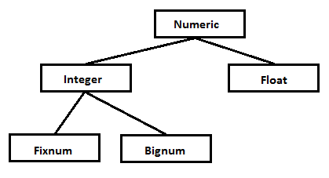

Ruby Control Flow
Part I
Quick lecture overview
- Data Types
- Expressions
- Operators
- Methods (defining / calling)
Data Types
- Booleans
- Numbers
- Strings
- Symbols
- Arrays
- Ranges
- Hashes
- Nil
Booleans
Boolean data type - type of data, intended to represent the only 2 options: 'True' and 'False'. Mostly used inside the conditional statements.
true.class => TrueClass
false.class => FalseClass
'Ruby awesome' if true => "Ruby awesome"
'Ruby sucks' if false => nil
Numbers
Numeric Class methods
Integer
Integer numbers is simply a sequence of digits.
Fixnum numbers are integers up to a certain limit. The limit is machine dependent.
Bignum values hold integers outside the range of the Fixnum.
If any operation on a Fixnum exceeds its range, the value is automatically converted to a Bignum.
0.zero? => true
7.next => 8
-5 + 7 => 2
5 / 2 => 2
1000.class => Fixnum
1_000_000_000_000.class => Bignum
* Bignum Class methods
Float
Floating point numbers represent real numbers.
Complex, Big Decimal and Rational classes are not built-in to Ruby, but are distributet with Ruby as part of the standart library.
5.8.integer? => false
7.1 - 2 => 5.1
3 - 1.5 => 1.5
5.0 / 2 => 2.5
(5.0 / 2).class => Float
Strings
A string is a data type representing textual data (sequence of unicode characters). Double quoted strings allow interpolation.
'Ruby'.class => String
'ruby'.capitalize => "Ruby"
'RubY'.downcase => "ruby"
"The time is #{Time.now}" => "The time is 2016-04-16 20:24:35 +0300"
'The time is #{Time.now}' => "The time is \#{Time.now}"
'The time is ' + Time.now.to_s => "The time is 2016-04-16 20:24:35 +0300"
'The time is '.concat(Time.now.to_s) => "The time is 2016-04-16 20:24:35 +0300"
Symbols
Symbols are simply constant names that you don’t have to predeclare and that are guaranteed to be unique. A symbol literal starts with a colon and is normally followed by some kind of name.
Symbols are frequently used as keys in hashes.
:ruby.class => Symbol
'ruby'.to_sym => :ruby
'Ruby basics lecture' if current_lecture == :ruby_basics => "Ruby basics lecture"
Arrays
Array is an indexed collection of elements, accessible using a key. The key is an integer and starts with 0 index.
[1, 2, 3].class = Array
array = [1, 'second', true, 4, 5] = > [1, 'second', true, 4, 5]
array[0] => 1
array.last => 5
array[-2] => 4
array[2, 2] => [true, 4]
[1, 2, 'str', 5].map{ |element| element * 2 } => [2, 4, "strstr", 10]
Ranges
A Range represents an interval — a set of values with a beginning and an end.
(1..10).class => Range
(1..10).include?(5) => true
(-5..-1).to_a => [-5, -4, -3, -2, -1]
('a'...'d').each_with_index { |n, i| print "#{i + 1}: #{n}, " } => "1: a, 2: b, 3: c"
Hashes
A Hash (associative array, map, or dictionary) is a collection of key-value pairs. It is similar to an Array, except that indexing is done via arbitrary keys of any object type, not an integer index.
person = { name: 'Vasyl', age: 22, address: 'Lviv city' }
person.class => Hash
person[:name] => "Vasyl"
person[:age] => 22
person[:gender] => nil
person = { 'name' => 'Vasyl', 'age' => 22, 'address' => 'Lviv city' }
person.class => Hash
person[:name] => nil
person['name'] => "Vasyl"
...
Nil
Nil is an object to represent nothing. Could be interpreted as false inside the conditional statements.
nil.class => NilClass
nil.nil? => true
nil.to_a => []
nil.to_i => 0
Other "Type-like" Classes
Time Class methodsDateTime Class methods
Time.now => "2016-04-16 23:01:04 +0300"
...
Date.parse('12/01/2016').month => 1
...
/http/ =~ 'http://www.vk.com' => 0
...
Duct Typing
In Ruby we don’t declare the types of variables or methods — everything is just some kind of object. In Ruby, the class isn't always the same as the type. Instead, the type of an object is defined more by what that object can do. It is called duck typing. If an object walks like a duck and talks like a duck, then the interpreter is happy to treat it as if it were a duck.
def save_name(name, target)
target << name
end
array = []
string = ''
save_name('Vasyl', array) => ["Vasyl"]
save_name('Vasyl', string) => "Vasyl"
Expressions
Constants
Variables
Naming
Operators
Priority
Methods
Method is defined using the keyword def. Method names should begin with a lowercase letter or underscore, followed by letters, digits, and underscore. A method name may end with one of ?, !, or =. (You couldn't use any reserved in Ruby words for determining the method's name). Method definition:
def my_method(arg1, arg2) # 2 arguments
# Code for the method would be here
end
Method invoking:
my_method('first_param', 'second_param')
Some practice?

No questions? No answers!
Created by Vasyl Lasiak / @vlasiak